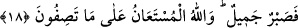

18. “Gömleğini üzerindeki sahte bir kanla getirdiler. (Yâkub) dedi ki: “Aksine
nefisleriniz size (kötü) bir işi güzel gösterdi. Artık (bana düşen) güzelce
sabretmektir. Anlattığınız karşısında (bana) yardım edecek olan, ancak Allah’tır.”
“Gömleğini üzerindeki sahte bir kanla getirdiler.” Yani ‘gömleğinin üstünde bulunan
bir kanı getirdiler ya da kanlı bir gömlek getirdiler’ demektir.
“
(yalancı, sahte) kelimesi, kanı mübâlağa ile vasfeden bir masdardır. Sanki
tamamen yalan olan bir şeyi getirmişler demektir. Nitekim yalancı birisine: ‘O yalanın
bizzat kendisidir, o tamamen palavradır.’ denir. Ya da ‘yalandan uydurulmuş bir kan’
demektir. Çünkü kardeşlerinin getirdiği kan Yûsuf’un kanı değildi.
Âişe (r.anhâ) bu “kezib” lafzını bulanık veya taze mânâsında olmak üzere “
”
olarak okumuştur.
Rivâyete göre kardeşler bir tavşan keserek kanını Yûsuf’un gömleğine bulaştırdılar,
fakat gömleği parçalamayı unuttular. Yâkub (a.s.) Yûsuf’un başına gelenleri duyunca
bütün gücüyle bağırdı ve: “Nerede o gömlek!” diye sordu. Gömleği eline alıp yüzüne
sürerek ağladı. Öyle ki yüzü gözü kana bulandı. Bu arada da şöyle diyordu: “Bugüne
kadar böyle yumuşak bir kurt görmedim, oğlumu yemiş, fakat gömleğini parçalamamış.”
Sanki “Peki bu esnada Yâkub söyledikleri şeylerle ilgili olarak bunları tasdik etti
mi?” diye bir soru sorulmuş ve şöyle cevap verilmiştir:
Yâkub “Dedi ki: Hayır” böyle olmadı. “Aksine nefisleriniz size” kötü “bir işi güzel
gösterdi.” İbn Abbâs (r.anhümâ)’nın söylediğine göre süsledi, kolaylaştırdı.
Ezherî şöyle der: “et-Tevsîl” bir şeyler istemek anlamındaki fiilinin tef’îl sıygasıdır.
Bu ‘şeyler’ kişinin talep ettiği kuruntulardır. Bunları taleb eden kimseye bâtıl ve benzer
davranışlar ona güzel gösterilir.
Yâkub (a.s.) onların yalancı olduklarını ve istedikleri şeyi Yûsuf’a yaptıklarını iki
şeyden çıkardı. Şiddetli kıskançlıkları ve gömleğin sağlam kalmış olması. Çünkü
gömlekte ne bir yırtık, ne de bir diş izi vardı. “Hayır, aksine nefisleriniz size bir şeyi
güzel gösterdi.” ifadesi, “onu kurt yemiş” şeklindeki sözlerini reddetmektedir.
“Artık” bana düşen “güzelce sabretmektir.” Bu, insanlara şikâyet edilebilecek bir
durum değildir. Çünkü Yâkub (a.s.) âyette; “üzüntü ve tasamı yalnız Allah’a arz
ederim.” (Yûsuf, 12/86) demişti.
Kemal Hocendî şöyle der:
Benim azîzim, Yûsuf ’un sohbetine ermek için acele et.
Güzelce sabretmezsen yârin cemâlini göremezsin.
Büyük ve kâmil şeyhimiz Osman Fazlî Efendi der ki: “Bilesin ki, mahlûkata şikâyet